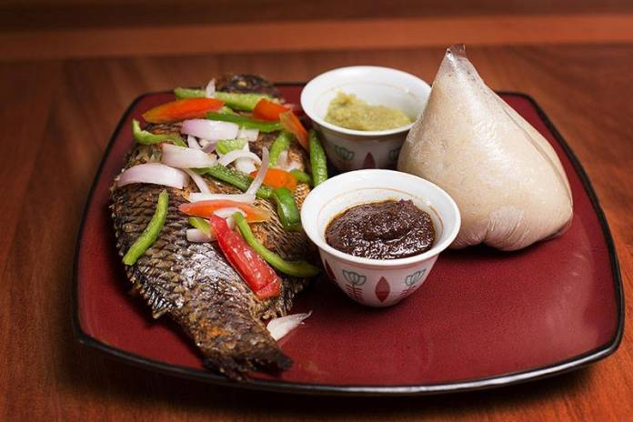

Explore Ghanaian Dishes

Waakye
A rice and beans dish cooked together, often colored with sorghum leaf and usually served with: Boiled eggs, spaghetti, gari, shito, meat or fish.
Northern Region, Ghana

Jollof Rice
Rice cooked in a seasoned tomato stew with onions, peppers, and spices.
Famous Ghanaian Dish.

Akple
A traditional Ewe dish made from corn flour, cooked into a sticky dough ball.
A staple among the Ewe people of the Volta Region.

Fufu & Light Soup
Fufu (pounded cassava and plantain) paired with a spicy, light tomato-based soup with meat or fish.

Hausa Koko
A spicy, fermented millet porridge.
Taste: Tangy, peppery, and warm.
.jpg)
Tuo Zafi
A soft maize-based dish similar to fufu, served with green leafy soup (ayoyo) and meat.
A staple in northern Ghana, especially among the Dagombas.

Banku & Tilapia
Fermented corn and cassava dough (banku) served with grilled tilapia fish and spicy pepper sauce (shito or kpakpo shito).
Popular in southern Ghana, especially among the Ewe and Ga-Dangme.

Kenkey and Fried Fish
Fermented corn dough molded and steamed in corn husks.
Taste: Sour, dense, and doughy.